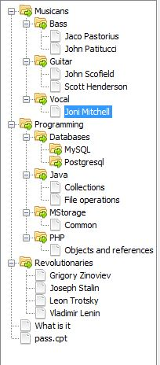

After application is started, firstly you need to set a root directory of storage collection. You have to go to Main -> Settings and in tab "Common" choose directory. If this is yours first launch of MStorage, you have to create an empty directory. If you have worked with MStorage already you can choose a last storage directory. Additional, archive you had loaded contains test archive for MStorage. You can find it in "storage" directory of unpacked *.zip.
You can choose existing directory. But you have to understand that MStorage all files except *.jpg, *.jpeg, *.png and *.gif mean as text files. According to this MStorage will try to open in editor all files except images and extensions listed in field "Exclude".
Now you will see storage collection tree in left panel. If it closed, you can choose View -> "View storage tree panel" or type Ctrl-T. If this is your first launch of MStorage, tree will empty. When it will filled, it will have view like that:

Call context menu in tree panel and create your first folder. After that, you can add to that folder new file by right click on the folder in the tree.

After you create a file it will be opened in tabs. You can edit this file and save changes with Ctrl-S or buttons in toolbar. If you right click on the tab header, appear context menu of tab:

If you right click on the file in tree, you call context menu of file:

There you can add picture to you file. Pictures will save in the same directory as file and will renamed by add to begin name of picture name of the file. That mean if you open directory of MStorage in your system file browser, you can see all files and pictures in the same directories as them see MStorage.

After you add a first picture, you have to switch on image carousel panel. For this you have to press button with picture in toolbar:
By default, files with no images will opened with hidden image carousel. If file has a pictures, image carousel panel will shown. For delete picture from file, right click to picture and choose "Delete image". If you click once on the image there will be opened preview window, sized by max size your screen or max size of image:

When picture preview window is opened, you can navigate by all pictures of this file by click on right or left sides of window (see at arrow):